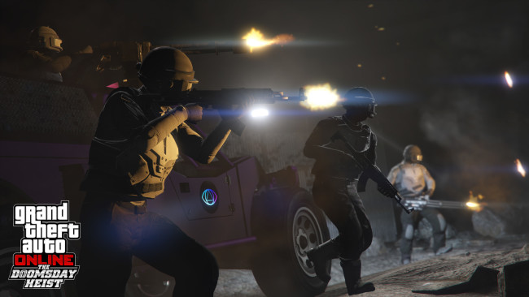

Grand Theft Auto 5 FREE DOWNLOAD
Download grand theft auto 5 for PC on M26 Gaming Store
About Game
When a young street hustler, a retired bank robber and a terrifying psychopath find themselves entangled with some of the most frightening and deranged elements of the criminal underworld, the U.S. government and the entertainment industry, they must pull off a series of dangerous heists to survive in a ruthless city in which they can trust nobody, least of all each other. GTA 5 for PC offers players the option to explore the award-winning world of Los Santos and Blaine County in resolutions of up to 4k and beyond, as well as the chance to experience the game running at 60 frames per second. The game offers players a huge range of PC-specific customization options, including over 25 separate configurable settings for texture quality, shaders, tessellation, anti-aliasing and more, as well as support and extensive customization for mouse and keyboard controls. Additional options include a population density slider to control car and pedestrian traffic, as well as dual and triple monitor support, 3D compatibility, and plug-and-play controller support.
SCREENSHOTS
How to download and install ?
- Click the Download button below and you should be redirected to Uploadhaven
- Get the link from the follow on site
- Once Grand Theft Auto 5 is done downloading, right click the .zip file and click on “Extract to Grand Theft Auto 5 v1.41.zip” (To do this you must have WinRAR, which you can get here).
- Double click inside the Grand Theft Auto 5 folder and run the exe application.
- Have fun and play! Make sure to run the game as administrator and if you get any missing dll errors, look for a Redist or _CommonRedist folder and install all the programs in the folder.
- In the case, the game shows please update, then request us from the request update button.
DOWNLOAD GAME
The download link is taken from STEAMUNLOCKED WEBSITE. The download link is generated by steamunlocked website which i have embeded in my website
SYSTEM REQUIREMENTS
- Requires a 64-bit processor and operating system
- OS: Windows 10 64 Bit, Windows 8.1 64 Bit, Windows 8 64 Bit, Windows 7 64 Bit Service Pack 1, Windows Vista 64 Bit Service Pack 2* (*NVIDIA video card recommended if running Vista OS)
- Processor: Intel Core 2 Quad CPU Q6600 @ 2.40GHz (4 CPUs) / AMD Phenom 9850 Quad-Core Processor (4 CPUs) @ 2.5GHz
- Memory: 4GB RAM
- Graphics: NVIDIA 9800 GT 1GB / AMD HD 4870 1GB (DX 10, 10.1, 11)
- Storage: 72 GB available space
- Sound Card: 100% DirectX 10 compatible